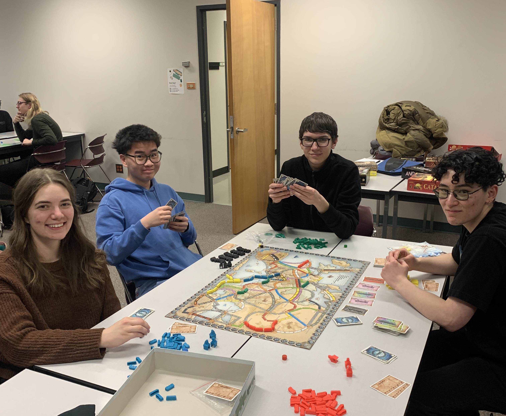

Constitution
Our constitution outlines the structure and purpose of the MSS. It is reviewed and updated each year by the executive team.
The constitution is also available as a PDF document.
Becoming a Member
The best way you can support the MSS is to become a member. Doing so will also grant you the following privileges:
- Voting role at general meetings
- Ability to sign books out of the MSS Library
- Use of the MSS printer in the lounge
- Access to the members' channel in the MSS discord server
Cost of membership is $5 for the year. This can be paid in-person in the lounge or by e-transfer to mathmss@ualberta.ca.
Note that membership is not required to attend events or to use the lounge and library.
Events
The MSS hosts various events throughout the year.
Board Game Night
Every Friday night, the MSS hosts a board game night in CAB 457 (adjacent to the lounge) from 5:00-7:00 PM. Come by to play games, hang out, and meet other students. Sometimes, pizza.

Reading Groups
The MSS runs various student-led reading groups throughout the year. These are a great way meet like-minded students and learn about new topics outside of your coursework. Currently, we are running the following reading groups:
| Subject | Text | Time and Date | Location | Leader(s) |
|---|---|---|---|---|
| Algebraic Geometry | An Invitation to Algebraic Geometry | Tuesdays, 1:00 - 2:00 | CAB 457 | Rindra Razafy |
| Algebraic Topology | Notes | Tuesdays, 3:30 - 4:30 | CAB 415-B | Jeff |
Resources
Library
The MSS oversees a small collection of textbooks and notes available for students to use and borrow. The library is located in the MSS lounge in CAB 453. Members can sign books out using the sign-out sheet located beside the bookshelf. Anyone is welcome to read the books in the lounge.
If you have any textbooks you would like to donate to the library, please bring them to the MSS lounge and/or contact the MSS execs at mathmss@ualberta.ca.
A simple table containing the MSS library catalogue can be found our site. We are working on a more user-friendly interface.
Connect with Us
We want to hear from you! We are active in the following places:
- In our Discord Server
- On our Instagram Account
In addition, we can be reached by email at mathmss@ualberta.ca and in person in our lounge at CAB 453.
Merch
The MSS sells a variety of merchandise, including t-shirts, toques, and pins. Check these out in the lounge or at our events.
Additional Organizations
Some other organizations that may be of interest to MSS members:
- ISSS: Interdepartmental Science Students Society
- AWM: Association for Women in Mathematics
- SIGMAS: Society in Graduate Mathematics and Statistics
-
CMS: Canadian Mathematical Society
- STUDC: Canadian Mathematical Society Student Committee
- PIMS: Pacific Institute for the Mathematical Sciences
Our counterparts from other departments are:
- The UACS: The Undergraduate Association of Computing Science (UAlberta)
- The Undergraduate Physics Society
We are also associated with the Department of Mathematical and Statistical Sciences.